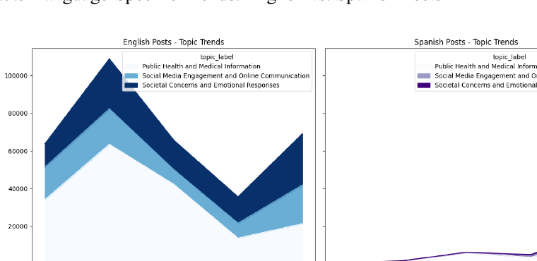

The question
How did COVID-19 discourse on Instagram evolve over five years, and what can sentiment, emotion and topic analysis reveal about the changing conversation?
The project combines multilingual preprocessing with lexicon-based sentiment and emotion analysis and unsupervised topic modelling.
The workflow
The analysis was split across Python, R and Power BI.
Python · preprocessingPython · translationPython · LDAR · SyuzhetR · NRCPower BI · visualisation


Topic modelling
Candidate LDA models were evaluated using coherence scores. The three-topic model was selected as the strongest configuration.
Topic 1Public Health & Medical Information
Topic 2Social Media Engagement & Online Communication
Topic 3Societal Concerns & Emotional Responses
ApproachGensim LDA with coherence-based model selection


What the analysis showed
Early volatilityThe sentiment series shows substantial variation during the early pandemic period.
Emotional complexityThe conversation cannot be reduced to positive versus negative sentiment; multiple emotions moved differently over time.
Three recurring themesThe LDA model identified health information, social-media engagement and broader societal/emotional concerns.
Language mattersEnglish-language posts dominate the dataset, while Spanish-language activity follows a different volume trajectory.
Limitations
- Lexicon-based methods depend on the coverage and assumptions of their dictionaries.
- Spanish posts were translated into English before the common-language analysis.
- Topic labels are human interpretations of model-generated word distributions.
- The analysis identifies patterns and associations rather than causal effects.
Code & project files
The portfolio repository contains the original Python notebook and R Markdown analysis, plus the visual outputs used in this case study. The full source dataset is documented separately rather than committed to GitHub.
GitHub profile →